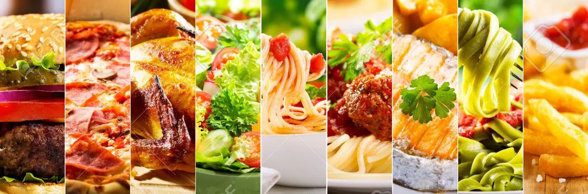

Hi! These are some of my favorite foods to eat. Some of these may seem pretty ordinary, but there are many componets that are contributed to making theses foods the most delicious meals that they are. First, It is extremely important how they are made and the ingredients. Next, I will also be sharing exactly where I have gone to find the place that makes each of these mouth-watering dishes the best that they can be.
